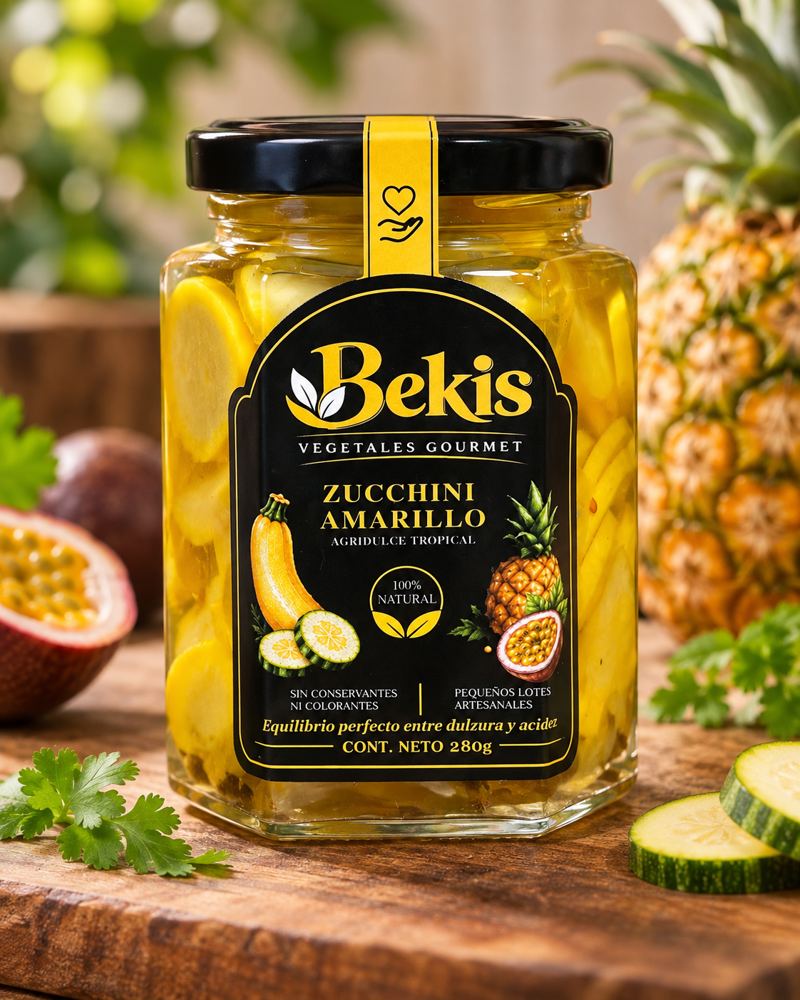
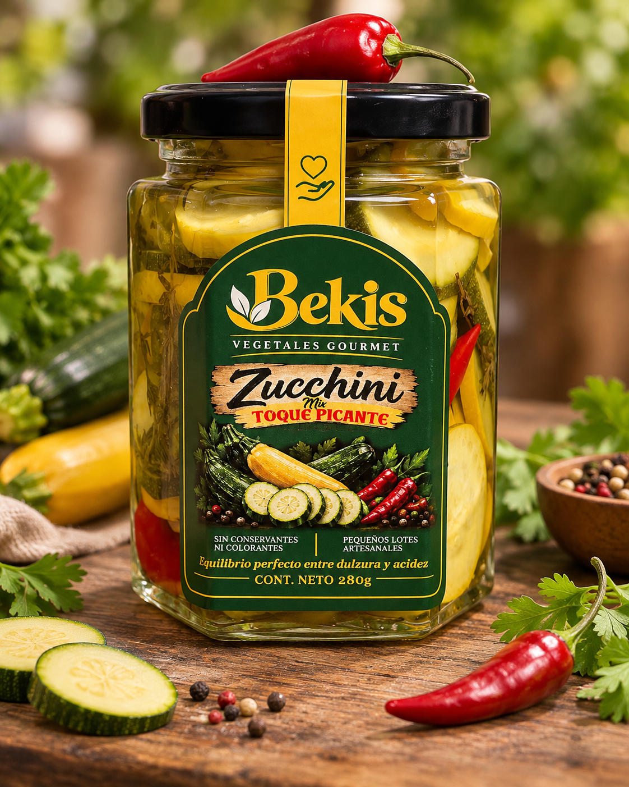
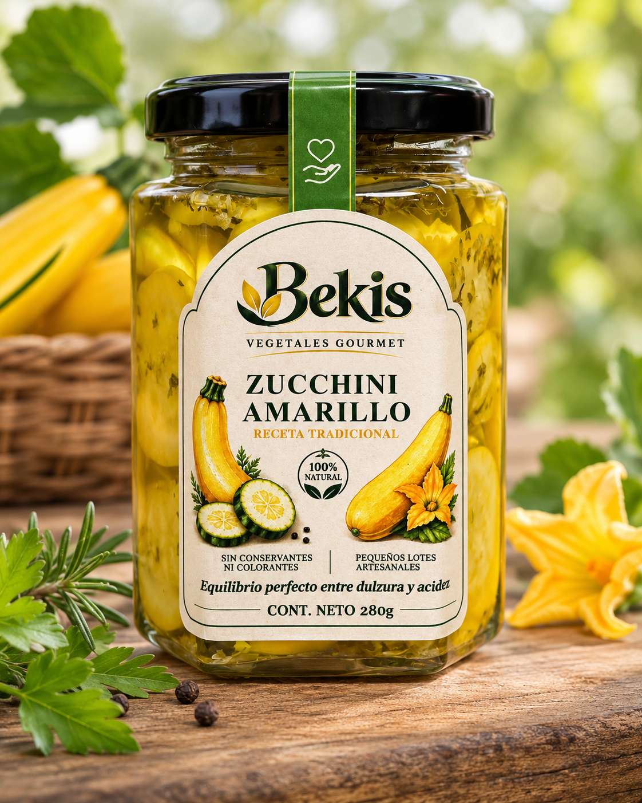
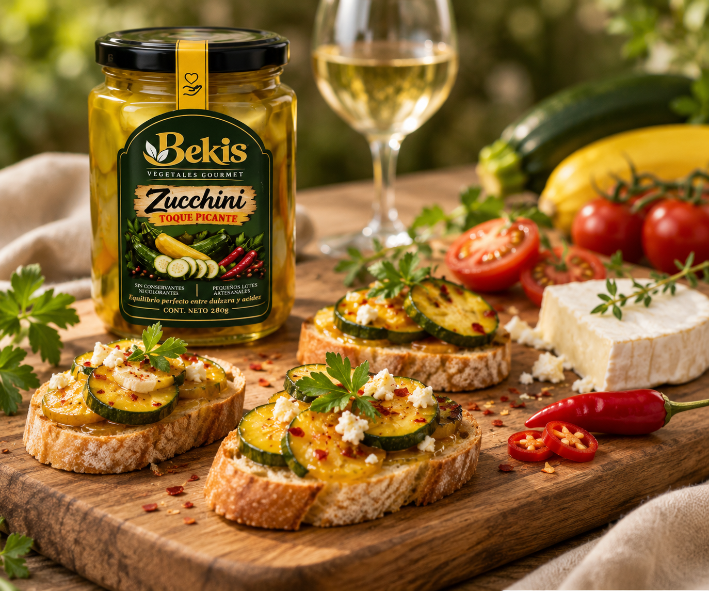

Zucchini amarillo
agridulce tropical
El dulce del zucchini amarillo y la frescura de la piña y maracuyá, en un equilibrio perfecto.
Ver másBEKIS · VEGETALES GOURMET
Descubre una forma distinta de disfrutar el zucchini: tres propuestas gourmet para transformar tus comidas y compartir nuevos sabores.
Inspiración para tu mesa · Tres variedades
Tres sabores, una misma pasión:
la frescura de la naturaleza.

El dulce del zucchini amarillo y la frescura de la piña y maracuyá, en un equilibrio perfecto.
Ver más
Una combinación irresistible de sabores, con el toque justo de picante.
Ver más
El sabor auténtico del zucchini amarillo, con especias naturales y un toque artesanal.
Ver más
IDEAS PARA DISFRUTAR
Atrévete a darle un toque especial a tus platos. Nuestros zucchinis son el complemento perfecto para quesos, carnes, ensaladas, sándwiches y más.
RECETARIO BEKIS
Tres recetas detalladas con ingredientes en gramos y preparación paso a paso.
Bekis nace del amor por los vegetales y la búsqueda de sabores auténticos. Creemos en el poder de lo natural, en la frescura de lo local y en la magia de lo artesanal.
Cada frasco es el resultado de un proceso cuidadoso, con ingredientes de alta calidad y el compromiso de llevar a tu mesa lo mejor de nuestra tierra.
TU PRÓXIMO SABOR FAVORITO
Consulta las variedades disponibles o solicita información comercial para tu tienda o restaurante.
Los datos de contacto estarán habilitados cuando se confirmen los canales oficiales.